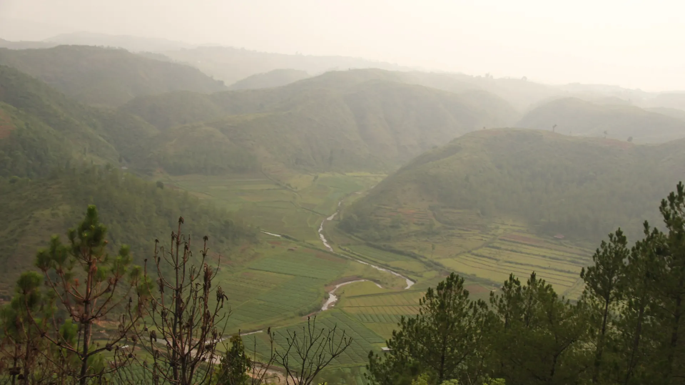

01Day 1 · Towards Lad Mawphlangkm 0.1
The Raj road
16kmWhole trail · Lad Mawphlang to Mawphlang
The trail is a 16 km piece of a 100 km route the British laid across the Khasi Hills, from Assam to Sylhet in today's Bangladesh.

Photo: Arshiya Urveeja Bose, CC BY 2.0· East Khasi Hills, Northeast
The trek in one line, and what you can do with it.
An easy walk on a road the British laid nearly two centuries ago.
5 stops on the map, then the climb. Scroll the stops and the map follows.
01Day 1 · Towards Lad Mawphlangkm 0.1
16kmWhole trail · Lad Mawphlang to Mawphlang
The trail is a 16 km piece of a 100 km route the British laid across the Khasi Hills, from Assam to Sylhet in today's Bangladesh.
01Day 1 · Camp by the riverkm 2.5
1,536mLowest point · Meghalaya Tourism
Meghalaya Tourism's plan crosses Laitsohma village and camps by the river on the first night.
02Day 2 · The Umiew bridgekm 3.2
1800sBuilt · As a mule track
The old bridge over the Umiam-Mawphlang river was damaged years ago. A suspension bridge now carries the trail across.
02Day 2 · Up from the riverkm 5.1
~300mClimb · 1,536 to 1,829 m
Megaliths line the route. They mark victories, sites of sacrifice, or graves.
02Day 2 · Mawphlang · the high pointkm 6.8
800+yearsGrove · Meghalaya Tourism
Mawphlang means 'grassy stone'. Its sacred grove, Law Lyngdoh, is the most sacred forest of the Khasi people.
Best in Oct–Apr.
Dark: the months the trek’s sources call its best. Mid: possible. See all treks in October.
Base prices from 6 operators’ own pages, per person. GST and travel are often extra. Treqz sells nothing.
₹800–60,000
The practical things, then the questions people ask.
Guides come from the Mawphlang Guide Committee. A full trek costs ₹1,550. Call +91 88374 56191 a day ahead.
Rangers of MountainsOne walker found Jio signal only on the hilltops. Tell someone your plan and return time before you start.
AllBlogs trek guideThere are almost no shops on the trail. Small stalls near the start and end sell tea and biscuits. Bring snacks and lunch.
AllBlogs trek guideShared sumos leave from near Bara Bazaar in Shillong in the morning, about ₹70–120 a person. A private taxi for drop and pickup costs about ₹1,500–2,500.
AllBlogs trek guideAbout 6.9 km of walking over 2 days on the trail.
The highest point is 1,829 m, about 70 m above the start.
Its sources grade it Easy.
Oct–Apr. It is also possible in May–Sep.
₹800 to ₹60,000 per person: base prices from 6 operators' own pages. GST and travel are often extra.
One walker found Jio signal only on the hilltops. Tell someone your plan and return time before you start.
Shared sumos leave from near Bara Bazaar in Shillong in the morning, about ₹70–120 a person. A private taxi for drop and pickup costs about ₹1,500–2,500.
Carry enough cash for the entry ticket, the guide and food.
Hiking pants, 2 pairs, Quick-dry full-sleeve shirts, 2, Light warm jacket, Thermals, Sun hat and sunglasses, Gloves and a woollen scarf, Raincoat or umbrella, Trekking shoes. The full list is on the 3D page.
Yes: Dec–Feb is among its best months.
Its sources grade it Easy and it takes 2 days on the trail, with a highest point of 1,829 m.
Nongriat root bridges, Dzükou Valley, Bailey Trail (Tawang), Sandakphu, Dzongri.


Treks in October · Treks in November · Treks in December · Treks in January · Treks in Northeast India · Winter Treks in India · Easy Treks in India for Beginners · Weekend Treks in India (1–2 Days) · 2 Day Treks in India · Family-Friendly Treks in India · David Scott Trail vs Nongriat root bridges · Free trek finder · All treks in 3D